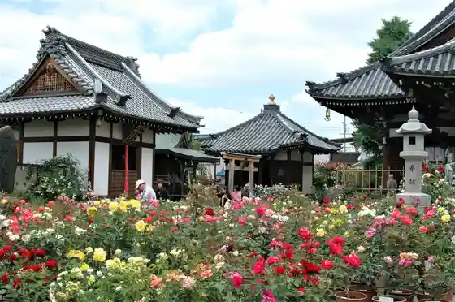
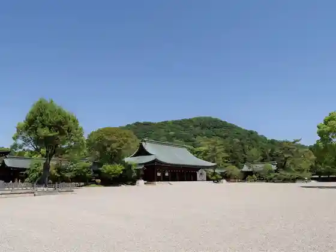
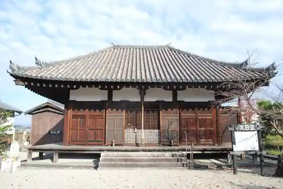

Fujiwara Kyuseki
Kashihara, Nara · 0744-21-1114 · Official / source link
Ofusa Kannon
Kashihara, Nara · 0744-22-2212 · Official / source link

Kashihara Shrine
Kashihara, Nara · 0744-22-3271 · Official / source link

Nara Prefectural Kashihara Kokogaku Kenkyusho Fuzoku Museum
Kashihara, Nara · 0744-24-1185 · Official / source link
Sei Hasu Tera Dainichi Do
Kashihara, Nara · Official / source link

Imai Town
Kashihara, Nara · 0744-24-8719 · Official / source link
Masuda Iwafune
Kashihara, Nara · 0744-21-1115 · Official / source link
Honyaku Shi Jiseki
Kashihara, Nara · 0744-20-1123 · Official / source link
Rekishi Ni Iko Kashihara Museum
Kashihara, Nara · 0744-27-9681 · Official / source link
Nara Bunkazai Kenkyusho Fujiwara Kyuseki Shiryoshitsu
Kashihara, Nara · 0744-24-1122 · Official / source link
Imai Machinami Koryu Center Hana Bo
Kashihara, Nara · 0744-24-8719 · Official / source link
Miguransu
Kashihara, Nara · 0744-47-2924 · Official / source link
Kashihara Konchu Kan
Kashihara, Nara · 0744-24-7246 · Official / source link
Kume Tera
Kashihara, Nara · 0744-27-2470 · Official / source link
Shonen Tera
Kashihara, Nara · 0744-22-5509 · Official / source link
Iruka Shrine
Kashihara, Nara · Official / source link
Imanishi Ie House
Kashihara, Nara · 0744-25-3388 · Official / source link
Mikuriya Ko Kannon Myoho Tera
Kashihara, Nara · 0744-22-3928 · Official / source link
Shobu Ike Burial Mound
Kashihara, Nara · Official / source link
Kasuga Shrine (Kashihara)
Kashihara, Nara · Official / source link
Nara Prefectural Kashihara Kokogaku Kenkyusho
Kashihara, Nara · TEL : 0744-24-1101 · Official / source link
Kyu Kometani Ie House
Kashihara, Nara · 0744-29-7815 · Official / source link
Kishigami Sanwa Sono
Kashihara, Nara · 0744-23-2983 · Official / source link
Kashihara Shrine Shinrin Yu En
Kashihara, Nara · 0744-21-1115 · Official / source link
Tenko Yama Shrine
Kashihara, Nara · 0744-21-1115 · Official / source link
Kashihara Shrine Oyobi So no Shuhen
Kashihara, Nara · 0744-20-1123 · Official / source link
Kashihara Shrine Takaramono Kan (Sukei Hall)
Kashihara, Nara · 0744-22-3271 · Official / source link
Hachiman Shrine (Kashihara)
Kashihara, Nara · 0744-22-4960 · Official / source link
Kashihara Ritsu Kashihara Manyo Horu
Kashihara, Nara · 0744-29-1300 · Official / source link